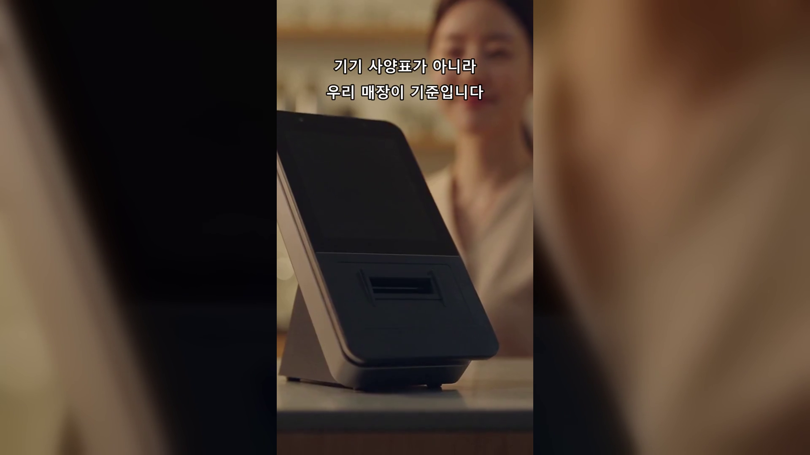
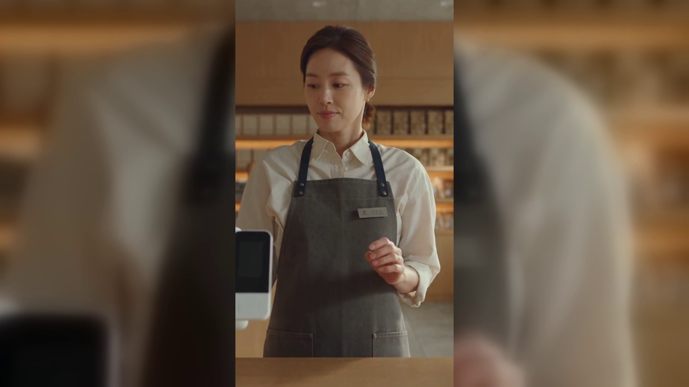
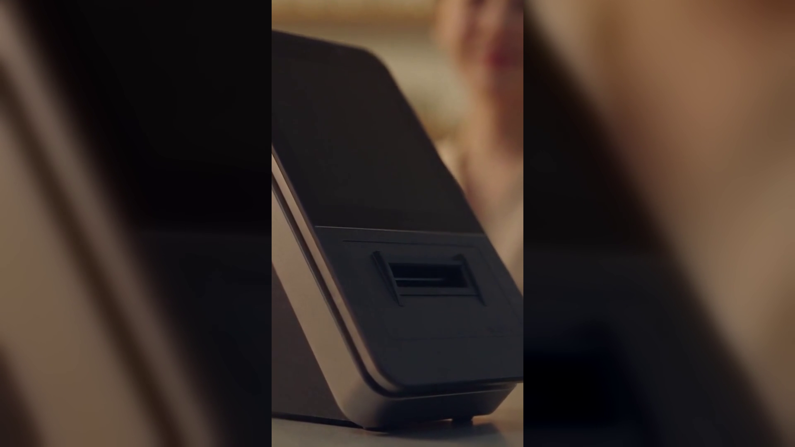

토스단말기 네이버단말기, 업종에 따라 갈리는 매장 선택 기준 6가지 — 카드단말기 비교
둘 중 하나로 좁혀 놓고도 끝내 못 고르겠다는 전화를 자주 받습니다. 같은 질문에도 매장마다 답이 다른 이유가 있습니다. 오늘은 그 답을 가르는 항목만 모아 정리했습니다.

결론부터 말씀드리면, 기준은 기기 사양표가 아니라 손님이 카운터에 머무는 시간과 결제 습관에 있습니다.
- 손님이 카운터에 머무는 시간부터 재 봅니다
계산이 십 초 만에 끝나는 매장과 상담하며 이 분씩 서 있는 매장은 필요한 기기가 다릅니다. 붐비는 시간대 한 시간만 재 보시면 어느 쪽인지 바로 보입니다.
- 건수가 많은지 금액이 큰지를 나눠 셉니다
소액 결제가 하루 수십 건씩 쌓이는 매장은 승인 속도가 회전을 만들고, 객단가가 큰 매장은 취소와 부분 환불이 쉬운 쪽이 손이 덜 갑니다. 지난달 매출을 건수와 금액으로 갈라 보세요.
- 예약으로 굴러가는 매장인지 확인합니다
예약이 매출의 절반을 넘으면 예약 명단과 결제 기록이 따로 놀 때마다 대조하는 일이 매일 생깁니다. 예약을 어디서 받고 있는지, 그 창구가 계산과 이어지는지를 먼저 보세요.
- 손님이 적립과 포인트를 실제로 쓰는지 셉니다
적립되냐고 묻는 손님이 하루 몇 명인지 세어 보면 답이 나옵니다. 손님이 이미 쓰는 적립 수단이 있다면 그 흐름에 맞추는 편이 카운터에서 실랑이가 줄어듭니다.
- 계산을 맡을 사람이 몇 명인지 셉니다
사장님 혼자 보는 시간대가 있다면 조작 단계가 적은 쪽이 안전합니다. 여러 명이 번갈아 서는 매장은 누가 서도 같은 순서로 끝나는 구조인지가 더 중요합니다.
- 배달과 포장을 같이 하는지 봅니다
홀과 배달이 섞이면 매출이 여러 창구로 흩어져 마감마다 숫자가 안 맞습니다. 배달 비중이 있다면 마감 정산을 한자리에서 확인할 수 있는지를 기준에 넣으세요.

여섯 항목의 답을 적어 두면 후보는 두 갈래로 나뉩니다. 소액 결제가 빠르게 도는 매장이면 토스단말기 쪽이, 예약과 적립을 네이버에서 받고 있는 매장이면 네이버단말기 쪽이 자주 남습니다. 정품 신제품 보증 · 수도권 직영 설치를 원칙으로, 매장 조건을 알려 주시면 함께 봐 드립니다.
어느 기기가 좋으냐보다 우리 매장이 어느 쪽이냐가 먼저입니다. 여섯 가지 중 세 개만 답을 정해도 후보는 금방 좁혀집니다. 카운터에서 재 보신 내용을 알려 주셔도 됩니다.
- 📞 문의 1544-7754
- 🌐 홈페이지 https://nwpos.co.kr

📷 인스타그램 팔로우 https://www.instagram.com/nurinetworkspos

▶️ 유튜브 구독 https://www.youtube.com/@nurinetworks
(2026년 8월 기준)